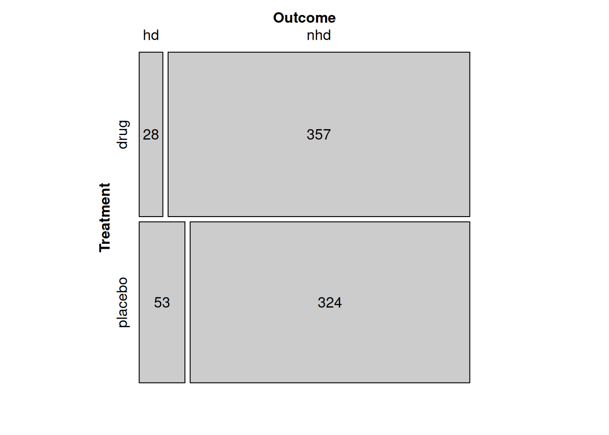

n <- c(drug=385,placebo=377)
hd <- c(drug=28,placebo=53)
nhd <- n-hd
tab <- data.frame(hd,nhd,n)
tab1 <- rbind(tab,Total=colSums(tab))
tab1 hd nhd n
drug 28 357 385
placebo 53 324 377
Total 81 681 762On Oct 1, Merck announced exciting results for a new drug, Molnupiravir a pill for treating patients with COVID-19. The results were good enough by 29 days into the study, that they submitted the results to the FDA for emergency approval. (Note that the link above is to a press release and not to a scientific paper that has been peer or FDA review; but if the results hold up to scrutiny, this could be exciting.)
Here is the relevant bit of the press release: > At the interim analysis, molnupiravir reduced the risk of hospitalization or death by approximately 50%; 7.3% of patients who received molnupiravir were either hospitalized or died through Day 29 following randomization (28/385), compared with 14.1% of placebo-treated patients (53/377); p=0.0012.
From this we can construct the following data table.
n <- c(drug=385,placebo=377)
hd <- c(drug=28,placebo=53)
nhd <- n-hd
tab <- data.frame(hd,nhd,n)
tab1 <- rbind(tab,Total=colSums(tab))
tab1 hd nhd n
drug 28 357 385
placebo 53 324 377
Total 81 681 762A mosaic plot allows us to look at this table graphically.
## Subset to just the inner part of the table.
ppddat <- as.matrix(tab[,1:2])
names(dimnames(ppddat)) <- c("Treatment","Outcome")
strucplot(ppddat,labeling=labeling_values("observed"))
With no bar, indicating no conditioning, we are looking at the probability among all people in the sample. This is called the marginal probability because it comes from the margins (sums) of the table.

The marginal (no condition) probability of a negative (hospitalization or death) outcome is 81 (red areas)/762 (blue areas) = 0.106.
The bar conditions or restricts the sample to just the people who meet the condition, in this case, those that have taken the active treatment.

The condtional probability of a negative (hospitalization or death) outcome given the drug is 28 (red areas)/385 (purple areas) = 0.073.
The bar conditions or restricts the sample to just the people who meet the condition, in this case, those that have taken the placebo treatment.

TThe condtional probability of a negative (hospitalization or death) outcome given the placebo is 53 (red areas)/377 (purple areas) = 0.141.
If the drug was independent of hospitalization, then the two probabilities we calculated above should be the same. In fact, when we calculate the ratio, we get 0.517. A huge improvement. No wonder Merck was so excited.
We should also be able to look at the column probabilities in the same way. The original sample is close to a 50-50 split between drug and placebo. (It actually 0.505, probably because they were not finished their recruting. This little bit of unbalance doesn’t matter). However, when we look at the fraction of the people who were hospitalized who got the drug \(\Pr(Treatment=drug | Outcome=HD)\) we see it is 0.346. Once again this is very different.
Suppose we have two variables \(A\) with possible outcomes \(\{a_1,\ldots,a_J\}\) and \(B\) with possible outcomes \(\{b_1,\ldots,b_K\}\). If \(A\) and \(B\) are independent, three different relationships will hold:
\(\Pr(A=a_j | B=b_k) = \Pr(A=a_j | B=b_k') = \Pr(A=a_j) \qquad \forall j,k,k'\)
\(\Pr(B=b_k | A=a_j) = \Pr(B=b_k | A=a_j') = \Pr(B=b_j) \qquad \forall j,j',k\)
\(\Pr(A=a_j \wedge B=b_k) = \Pr(A=a_j) \Pr(B=b_k) \qquad \forall j,k\) (where \(\wedge\) means and).
Recall that the conditional probability is formally defined as \[ \Pr(A=a_j|B=b_k) = \frac{\Pr(A=a_j \wedge B=b_k)}{\Pr(B=b_k)} \ .\] So if \(\Pr(B=b_k)=0\) for any \(k\), then the first expression doesn’t quite work right because we need to divide by zero. Similarly, the second has problems if \(\Pr(A=a_j)=0\) for any \(j\). Therfore, the thrid expression is used as the definition, because it avoids the technical problems (divide by zero in certain cases) of the first two. But I think the first two give better intuition for what independence means.
Note that even though the experimental design called for equal numbers in the drug and placebo arms of the studies, random events in how the participants were recruited made them slightly unequal. This is likely just luck, and not a serious problem.
Now look at the different probabilities of a negative outcome for the drug and the placebo. How do we know if that is real, or just luck? One way we could answer that question is to build a statistical model for “just luck” and calculate how like the the observed data are if that model is true.
In this case, the model for “just luck” is the independence value up above. Using that we can calculate the expected values.